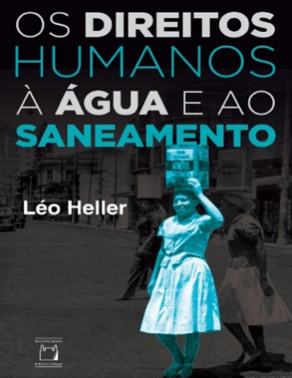
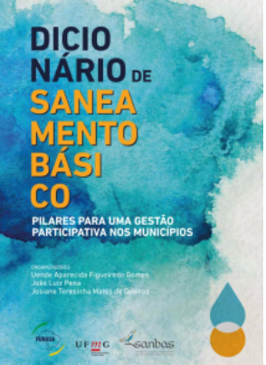
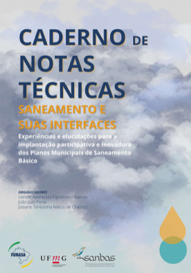

Módulo 1 | Aula 2
Marcos Referenciais do Saneamento Rural
Tópico 3
Saneamento Básico como Direito Humano
Para iniciarmos este tópico, é importante que você veja um breve histórico sobre a instituição dos Direitos Humanos à Água e ao Saneamento (DHAS).
1948
Os DHAS já estavam implícitos nos artigos 3º e 25º da Declaração Universal dos Direitos Humanos (DUDH) da Organização das Nações Unidas (ONU).
07/2010
Somente depois de 62 anos da aprovação da DUDH, e após muitas negociações na comunidade internacional, os DHAS ganham uma evidência clara. Em 28 de julho de 2010, a Assembleia Geral da ONU instituiu a resolução 64/292, reconhecendo que “o direito à água potável é um direito humano essencial para o pleno gozo da vida e da humanidade”.
09/2010
Em setembro de 2010, a ONU, em Assembleia Geral, aprovou a Resolução 15/9, afirmando que o direito humano à água é “derivado do direito a um padrão de vida adequado e intrinsecamente relacionado ao direito ao mais alto padrão possível de saúde física e mental, bem como o direito à vida e à dignidade humana”.
2015
A ONU aprovou a Resolução A/RES/70/169, que reconhece os direitos distintos à água potável e ao esgotamento sanitário. Essa resolução é um marco importante para o saneamento no mundo:
"o direito humano ao saneamento garante que todas as pessoas, sem discriminação, tenham acesso físico e econômico ao esgotamento sanitário, em todas as esferas da vida, e que este seja seguro, higiênico, social e culturalmente aceitável e que proporcione privacidade e garanta dignidade".
Veja algumas dicas de leitura sobre este tema:

O brasileiro Léo Heller, atualmente pesquisador do Instituto René Rachou, (Fiocruz Minas Gerais), ocupou o cargo de Relator Especial para os DHAS da ONU, no período de 2014 a 2020, é autor do livro: “Os Direitos Humanos à Água e ao Saneamento”, uma publicação de referência no Brasil.

Junto à Priscilla Neves, ele também escreveu um verbete sobre o tema no Dicionário de Saneamento Básico: Pilares para a Gestão Participativa nos Municípios. Para acessar o Dicionário, clique aqui

Os Professores Patrícia Borja e Luiz Roberto Moraes apresentam no Caderno de Notas Técnicas do Projeto SanBas o capítulo: “Direitos humanos à água e ao esgotamento sanitário: breve cenário internacional e nacional, princípios, obrigações e critérios de positivação”. Consulte o texto para compreender a história do reconhecimento do saneamento como direito humano! Esse material está disponível para download, basta clicar aqui.
No Comentário Geral nº 15 sobre o direito à água, do Pacto Internacional sobre Direitos Econômicos, Sociais e Culturais das Nações Unidas, o direito humano à água envolve:
“O direito de todos de dispor de água suficiente, segura, aceitável e acessível para uso pessoal e doméstico. É necessário um suprimento adequado de água potável para evitar a morte por desidratação, reduzir o risco de doenças relacionadas à água e atender às necessidades de consumo e culinária e às necessidades de higiene pessoal e doméstica”
(ONU, 2002, p. 1).
Ainda segundo a ONU, os DHAS incluem os princípios constituintes dos direitos econômicos, sociais e culturais e critérios. Conheça agora quais são esses princípios e suas definições.
Discriminação é qualquer distinção, exclusão ou restrição que tenha por objetivo ou resultado prejudicar ou anular o reconhecimento, gozo ou exercício, em pé de igualdade com outros, de direitos humanos e liberdades fundamentais nas esferas política, econômica, social, cultural e civil ou qualquer outra.
Portanto, é necessário garantir igualdade entre homens e mulheres e a não discriminação baseada em raça, cor, sexo, língua, religião, opinião política ou qualquer outra opinião, origem nacional ou social, fortuna, nascimento, qualquer outra situação”.
Em relação aos DHAS, os Estados-Nação têm três obrigações legais específicas: respeitar, proteger e fazer cumprir esses direitos. A obrigação de respeitar exige que os Estados devem abster-se de interferir diretamente ou indiretamente no gozo do direito à água; proteger exige que os Estados impeçam terceiros, como as corporações, de interferir de alguma forma no gozo do direito à água; cumprir exige que os Estados “adotem as medidas necessárias para alcançar a plena realização do direito à água”.
Os serviços sustentáveis para as presentes e futuras gerações devem ser assegurados, entendidos pela garantia da disponibilidade, acessibilidade física e econômica, continuidade e previsibilidade, para todos, não sendo admitida discriminação de qualquer natureza e respeitando o equilíbrio entre as dimensões econômica, social e ambiental.
Conforme define a Declaração Universal dos Direitos Humanos, toda pessoa tem o direito de tomar parte no governo de seu país. Segundo a Declaração da ONU sobre o Direito ao Desenvolvimento, de 1986, a participação deve ser ativa, livre e significativa. Assim, as instituições públicas devem garantir a participação nos processos de decisão sobre as políticas públicas de abastecimento de água e de esgotamento sanitário.
O acesso à informação, um dos direitos humanos garantidores dos demais direitos, é fundamental para a participação democrática, ativa e livre da população na definição, decisão e acompanhamento das políticas públicas de abastecimento de água e de esgotamento sanitário. Assim, cabe ao poder público disponibilizar informação à sociedade de forma a possibilitar o exercício desse direito.
Esses direitos também devem cumprir alguns critérios normativos dos direitos humanos. Vamos conhecê-los?
Disponibilidade
O fornecimento de água deve ser contínuo, em quantidade suficiente para os usos pessoais e domésticos (beber, cozinhar, lavar roupa, disposição dos dejetos, higiene pessoal e doméstica). O consumo per capita de água deve atender às diretrizes da Organização Mundial da Saúde (OMS).
Qualidade
A água deve ser adequada para consumo e outros usos, não devendo se constituir em uma ameaça à saúde pública. O esgotamento sanitário deve ser seguro do ponto de vista higiênico e técnico.
Aceitabilidade
As instalações de esgotamento sanitário devem ser aceitáveis do ponto de vista cultural, com atenção às especificidades de gênero no que se refere à intimidade, à segurança e à dignidade.
Acessibilidade física
As instalações e serviços de água devem estar disponíveis para uso, ao alcance de toda a população. O abastecimento deve ser suficiente, seguro, aceitável e acessível nas proximidades dos domicílios, escolas, centros de saúde e outras instituições e lugares públicos.
Acessibilidade econômica
Serviços e instalações de água devem estar ao alcance de todos, com custos e encargos diretos e indiretos acessíveis, sem comprometer o exercício de outros direitos humanos.
Dignidade e privacidade
Relacionadas ao tipo e localização das instalações sanitárias e às características culturais de cada sociedade.
Orientados por todos esses princípios e critérios, os DHAS compreendem a garantia universal de água e saneamento seguros para uso pessoal e doméstico, em quantidade suficiente para o atendimento das necessidades humanas, aceitável e acessível física e economicamente. Para o direito humano ao esgotamento sanitário é acrescentado que a oferta de soluções para coleta, transporte, tratamento do esgoto e a disposição segura. Além disso, deve assegurar, também, a dignidade humana e a privacidade.
Falamos acima de acessibilidade, mas você sabe dizer o que significa?
Acessibilidade pode ser definida como a possibilidade e condição de alcance, percepção e entendimento para a aquisição, utilização e consumo de algo, em igualdade de oportunidades. Já o acesso é definido como o ato de ingressar, de chegada. No caso do saneamento rural, o acesso aos seus componentes significa ter conquistado as condições de acessibilidade anteriores, permitindo a aquisição ou apropriação do saneamento adequado.
Além dos princípios e critérios estabelecidos pela ONU, no caso dos direitos humanos no Brasil à água de consumo humano, ao esgotamento sanitário, ao manejo de resíduos sólidos e de águas de chuva de forma adequada exige diversas condições sociais, técnicas, ambientais, culturais e políticas que diferenciam muito, dependendo do país e dos territórios.
Considerando a aplicação da Dinâmica das Torneiras em alguns processos de educação em saneamento e saúde em comunidades distintas, a imagem que você verá a seguir, apresenta possíveis resultados. Nela, cada “registro” representa um tipo de acessibilidade que precisa ser “aberta” para que, no final, seja garantido à população de uma comunidade rural, o acesso à água, em quantidade e qualidade, adequadas, por meio da imagem do copo cheio, com água potável.
< INFO EM DESENVOLVIMENTO >
Direitos humanos à água potável e saneamento (DHAS), Agenda Água, Saneamento e Higiene (WASH) e Objetivos do Desenvolvimento Sustentável (ODS)
Ainda que o acesso à água e ao saneamento sejam reconhecidos como direitos, a realidade é que uma parcela considerável da população mundial, especialmente populações que moram em territórios rurais, permanecem sem acesso a esses serviços. E você pode estar se perguntando neste momento: como isso é calculado?
Para compreender este cenário são utilizados dados obtidos através de indicadores. Em 1990, começaram a ser construídos os indicadores globais sobre este tema, momento no qual a OMS e o Fundo das Nações Unidas para a Infância (UNICEF) criaram o Programa de Monitoramento Conjunto (Joint Monitoring Programme – JMP).
Dados de 2020 do monitoramento realizado pelo JMP revelam o seguinte quadro:
Para enfrentar os desafios que você acabou de ver através do infográfico, temos como referência internacional dois importantes marcos de apoio aos municípios – a agenda Wash e a agenda de desenvolvimento pós-2015 que estabeleceu os Objetivos do Desenvolvimento Sustentável (ODS).
A preocupação com o acesso à água, saneamento e higiene (WASH) gerou metas estruturadas nos ODS para 2015-2030. Essa temática é abordada especificamente no ODS 6 (água potável e saneamento), mas também está presente no ODS 3 (Saúde e bem-estar), pois ele possui uma relação com o saneamento básico.
< INFO EM DESENVOLVIMENTO >
A implementação do PNSR está diretamente relacionada com o ODS 6, e com algumas metas do ODS 3, como você acabou de ver. No entanto, ao analisar os 17 ODS é possível perceber que o saneamento rural perpassa transversalmente sua totalidade.
Clique aqui e leia a notícia publicada em 1 de julho de 2024 pela ONU, divulgando o seguinte alerta: o mundo não está cumprindo os Objetivos de Desenvolvimento Sustentável.
Veja os resultados do monitoramento do alcance dos ODS – 6 e como é fundamental a promoção do saneamento para as populações dos campos, das florestas e das águas:
“Aumentamos o número de pessoas que têm água potável e saneamento, mas bilhões de pessoas ainda não têm acesso. Entre 2015 e 2022, a proporção da população que utiliza água potável gerida de forma segura aumentou de 69 para 73 por cento. As percentagens com saneamento gerido de forma segura aumentaram de 49 para 57 por cento e com serviços de higiene básica de 67 para 75 por cento. Em 2022, porém, 2,2 bilhões de pessoas ainda não tinham água potável gerida de forma segura, 3,5 bilhões não tinham saneamento gerido de forma segura (incluindo 419 milhões que praticavam defecação a céu aberto) e 2 bilhões ainda tinham serviços de higiene básica inadequados (incluindo 653 milhões sem quaisquer instalações). Além disso, 1,8 bilhões de pessoas não tinham água potável no domicílio, sendo as mulheres as principais responsáveis pela recolha de água em dois em cada três agregados familiares. Alcançar a cobertura universal até 2030 exigirá um aumento de seis vezes nas atuais taxas de progresso para a água potável gerida de forma segura, um aumento de cinco vezes para o saneamento gerido de forma segura e um aumento de três vezes para os serviços de higiene básica.”
A agenda internacional pós-2015, adotou um programa que definiu 17 ODS com 169 metas para acabar com a pobreza, combater a desigualdade, injustiça e as mudanças climáticas até 2030. Abordar e eliminar as desigualdades tornaram-se preocupações centrais na era dos ODS.